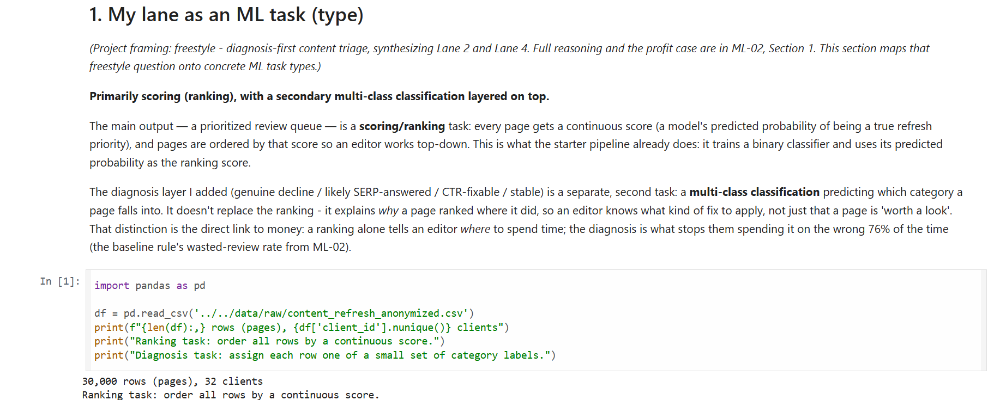
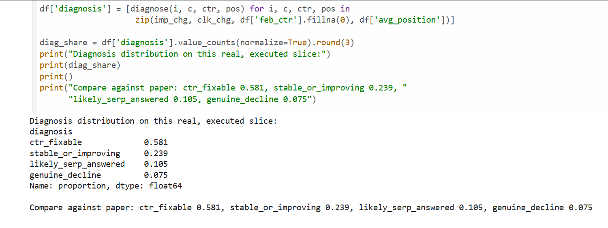

Case Study
FlyRank Content Refresh — Diagnosis Before Action
Try It — Real Data, Live
What this does
This is a real, working lookup tool, not a screenshot or a mockup. Type a real page ID below, it queries a static JSON file containing my actual scored data (32,954 real pages) directly in your browser — no backend, no server round-trip. It returns the genuine score, reason code, and recommended action for that exact page — or an honest "not found" if the ID doesn't exist.
Data used: this queries my ML-07 baseline-rule queue specifically (score = search-impression volume × a striking-distance/volume flag) — the transparent, rule-based scoring layer of my project, not yet my trained diagnosis-first model. I'm building toward wiring this same lookup to that stronger model next.
Note: every real match shows the same reason code and action. That's not a bug — this baseline rule is a single yes/no flag (worth reviewing, or not), so it can only ever produce one pair of labels. Only the score varies row to row. This is exactly the limitation my diagnosis-first model (4 real categories, Precision@50 0.820 vs. this rule's 0.400) was built to fix.
Try a real ID: content_e8a52cf3d5988c07 or content_82e35c4845e6c391
The problem
FlyRank's existing system flags "declining" pages using one blunt rule. It can't tell the difference between a page that genuinely needs a rewrite and a page that's actually fine — it just stopped getting clicks because Google now answers the question directly on the results page. A page not getting clicks doesn't mean it's not doing great.
What I did — and decided
I combined two of the project's four predefined lanes into one queue instead of picking a single one, because "which pages need review" and "why they're underperforming" are really one question, not two. The core decision: diagnosis before action. I treated wasted editor time — someone rewriting a page that was never the problem — as the costlier mistake to guard against, over missing a real decliner. And when I found a pattern that looked like it could explain the "clicks fine, impressions falling" cases, I called it what it is: a proxy, not proof.

Real notebook output — task framing (ML-03), run against the actual starter dataset.
What came of it
1,111 pages (3.7%) show the "impressions fine, clicks falling" pattern — and none of them are caught by the existing "declining" label. That's a real gap in the current system, not a guess.

Real notebook output — the diagnostic segment, checked directly against the data.
Before / after: my editing voice
"This solution leverages advanced analytics to drive significant improvements in content performance, delivering measurable, results-driven impact for the business."
"A page not getting clicks doesn't mean it's not doing great — I built a way to tell the two apart before anyone wastes a week rewriting something that was never broken."
Want to talk through how this approach could apply to your own team's data?
Talk to me about how I'd apply this on your team